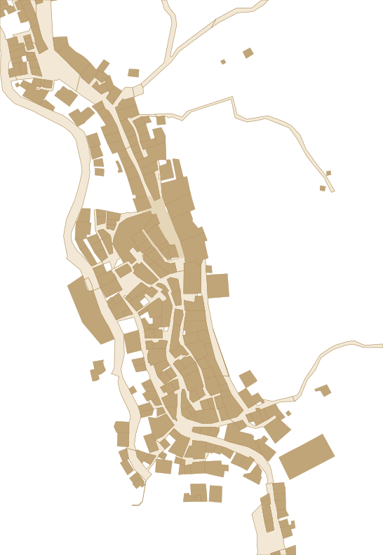

Per le cantine di Turania

- DALLE ORE
- 12:00

Per la seconda edizione si torna nelle cantine del borgo: si assaggia il vino e da una cantina si passa alla successiva. Lungo il percorso ci si ferma a mangiare, si cammina piano. Si parla con chi si incontra, e non si guarda l'orologio.
Questa pagina sarà aggiornata con tutte le novità dell'evento. Vi aspettiamo.
LA MAPPA DEL BORGO

Piazza Umberto I la chiesa SP 37 Via TuranoPROGRAMMA
I Menestrelli del Cicolano girano per il borgo con organetto, fisarmonica, chitarra e tamburo. Suonano stornelli e canti popolari in dialetto, e i saltarelli delle feste di paese. Si fermano, suonano, ripartono; chi li ascolta resta lì, e poi la passeggiata prosegue con il bicchiere in mano.
MERCATINO
Come nella prima edizione, anche quest'anno c'è un mercatino: produttori locali espongono i loro prodotti. Si gira tra le bancarelle senza fretta, si guarda, si chiede, e ci si porta a casa qualcosa. La cosa migliore, qui come nelle cantine, è fermarsi a parlare.